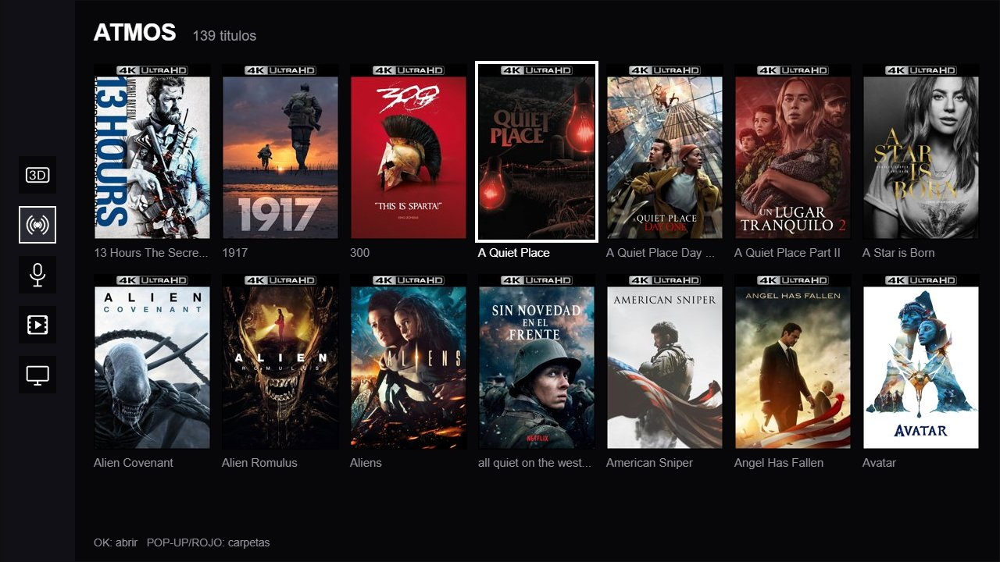
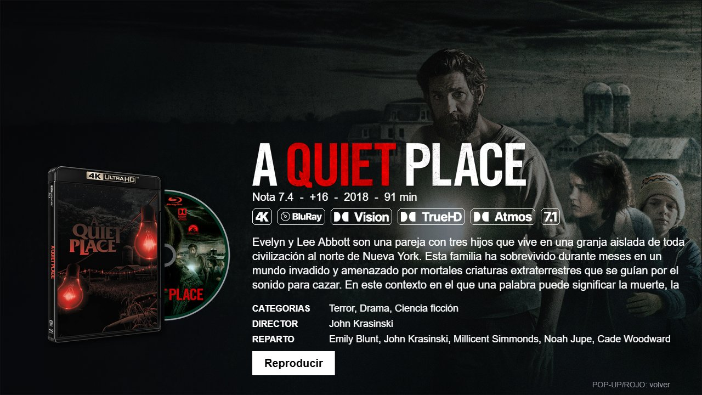
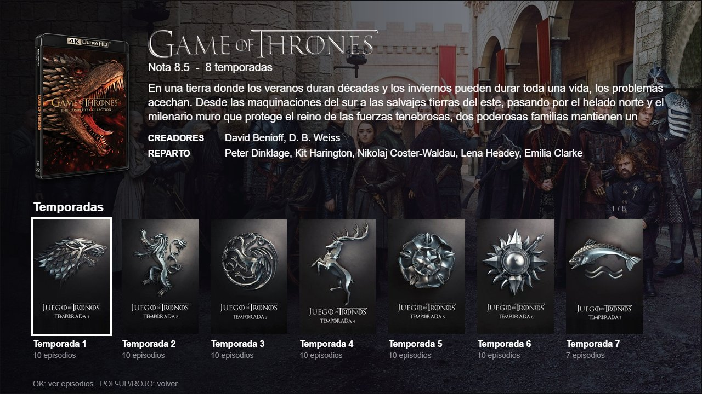
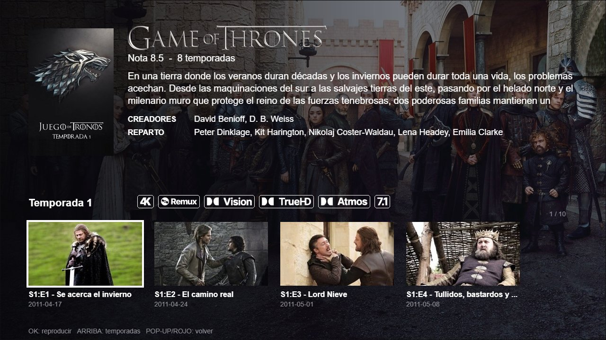

Hoy, para ver una película, entras a Red en el Chinoppo y buscas la carpeta en tu NAS. Con esta guía, al encenderlo te aparece un muro de carátulas, como en los reproductores R_volution: eliges con el control y empieza la película. No hace falta saber programar ni usar la terminal.




El Chinoppo sabe reproducir discos Blu-ray que traen un programa dentro y pueden usar internet (BD-Live). La Biblioteca es uno de esos discos, pero vive como archivo en una memoria USB. Al abrirlo, le pide las carátulas a un pequeño programa que instalarás en tu NAS. Cuando eliges una película, ese programa le dice al Chinoppo que la reproduzca desde tu carpeta de siempre.
Tus películas no se mueven ni se modifican. El programa solo las lee.
| Qué | Detalle | |
|---|---|---|
| Chinoppo M9201 | Con el firmware liberado RU 20XRU-65-0131. Es el que permite que la Biblioteca se abra sola al encender. | Necesario |
| NAS | El que ya usas con el Chinoppo, con NFS y con una app para correr Docker. Por ejemplo: Container Manager en Synology, Container Station en QNAP, Docker en Unraid, Apps en TrueNAS o Portainer en Asustor. Si tu NAS no tiene ninguna, mira “Avanzado”. | Necesario |
| Memoria USB | Cualquiera de 1 GB o más, formateada en FAT32. Se queda conectada al Chinoppo. | Necesario |
| Una PC o laptop | Solo para abrir páginas en el navegador y copiar archivos a la USB. | Necesario |
| Cuenta en TMDb | Gratis. De ahí salen las carátulas y sinopsis. | Necesario |
Ten a mano papel; vas a anotar seis datos en los primeros pasos:
192.168.1.16).192.168.1.17). Anótala./volume1/Plex o /share/Peliculas. Respeta mayúsculas. Si tus películas están más adentro (como Plex/Library/Movies), no importa: esas subcarpetas las eliges después, en el paso 7.| NAS | Ruta de una carpeta llamada “Plex” |
|---|---|
| Synology | /volume1/Plex |
| QNAP | /share/Plex |
| Unraid | /mnt/user/Plex |
| TrueNAS | /mnt/NombreDelPool/Plex |
¿No ves tu NAS en Red → NFS? Hoy entras por SMB/Samba, y la Biblioteca necesita NFS. En la configuración de tu NAS, activa el servicio NFS y dale permiso a esa carpeta para la IP del Chinoppo (lectura basta). Si te pregunta por “squash”, elige que todos los usuarios se asignen a admin. Si hay una opción de “puertos no privilegiados”, márcala. Luego vuelve a mirar en el Chinoppo.
docker).biblioteca-chinoppo-public-main con todo adentro, incluido el archivo compose.yaml.biblioteca y apúntalo a la carpeta biblioteca-chinoppo-public-main. Si tu app no deja elegir carpeta, pega el contenido de compose.yaml en el editor que te muestra.compose.yaml, cambia solo las líneas que terminan con <--, con los datos que anotaste:
TMDB_API_KEY: "tu clave de TMDb"
CHINOPPO_IP: "IP del Chinoppo"
NFS_SERVER: "IP del NAS"
NFS_FOLDER: "volume1/Plex" ← carpeta como la ve el Chinoppo, SIN la / del inicio
TZ: "America/Mexico_City" ← tu zona: Europe/Madrid, Europe/Rome, America/Bogota…
...
- /volume1/Plex:/media/Plex:ro ← carpeta como la ve el NAS; deja igual lo de :/media/Plex:ro
...
FANART_API_KEY: "tu clave de fanart.tv" ← más abajo, en la parte de artwork: para los discosnpm ci y npm run build un buen rato). Los avisos amarillos que dicen deprecated son normales, no son errores. No cierres ni canceles; cuando diga que está en ejecución, sigue.Si te equivocaste en un dato: detén la aplicación, corrige el compose.yaml en el editor de tu app de Docker y vuelve a iniciarla.
http://IP-DEL-NAS:8095 (por ejemplo http://192.168.1.17:8095). Esa página es del programa que acabas de instalar.Series: organízalas como Nombre de la serie/Season 01/episodio.mkv para que salgan por temporadas.
:8095), hasta arriba, da clic en Descargar archivos para la USB. Te baja Biblioteca-USB.zip, ya configurado con tu NAS y tu Chinoppo.USB/
├── Biblioteca.iso
└── AutoScript/Si un día cambia la IP del NAS o del Chinoppo, corrige el compose (paso 6) y vuelve a descargar este ZIP.
Listo. Elige una película con las flechas y OK. La primera de cada carpeta tarda unos 40 segundos en empezar; las siguientes, poco.
Los botones RETURN, TOP MENU e INFO no funcionan dentro de la Biblioteca: el Chinoppo se los queda.
artwork, biblio, disc…biblioteca-chinoppo-public-main, sube el ZIP nuevo directamente a la carpeta de tus apps (no dentro de otra) y extráelo ahí.<--.Importante: algunas apps de Docker (como Container Manager) guardan su propia copia del compose.yaml cuando lo editas en su pantalla, y no la cambian aunque subas archivos nuevos. Por eso hay que eliminar la aplicación y crearla de nuevo, no solo reiniciarla.
La memoria USB no se toca, salvo que cambie la IP del NAS o del Chinoppo, o que la nueva versión lo pida.
Biblioteca.iso y la carpeta AutoScript, y que el Chinoppo tenga el firmware liberado. Si en la USB aparece un archivo autoscript_ok.txt, el arranque sí corrió.Biblioteca.iso de la USB no salió del botón de la página. Descárgala desde ahí (paso 8).NFS_FOLDER del paso 6. Abre http://IP-DEL-NAS:8095/log: ahí se ve qué pasó.http://IP-DEL-NAS:8095/match y corrígela.Se instala solo junto con la Biblioteca, en el mismo paso 6. Ábrelo en http://IP-DEL-NAS:3001, o desde el enlace Abrir Artwork Studio de la página :8095. Ahí eliges, título por título:
FANART_API_KEY del compose).En las pestañas eliges y al final pulsas Aplicar Cambios, que aplica todo junto. Puedes ver el resultado en la Vista previa de la página :8095 sin prender el Chinoppo.
De fábrica, el Chinoppo reproduce los MKV con Dolby Vision como HDR10 normal. El parche oppo-dv-mkv de fandangos (github.com/fandangos/oppo-dv-mkv) hace que la TV o el proyector reciban Dolby Vision real (perfiles 5, 7 y 8) y además mejora los subtítulos. Es independiente de la Biblioteca.
Bajo tu propio riesgo. Cambia cómo arranca el reproductor. Lee el README del proyecto antes. En el menú de fábrica nunca presiones “Fmt buda” ni “Fmt apda”.
mkv-subtitles de la versión más reciente (nosotros: v1.7.1).oppo-dv-mkv-result.txt debe decir INSTALLED.En la TV o proyector usa Dolby Vision en modo TV-led. Ojo: los MKV de discos 4K que traen la mejora de Dolby Vision en una segunda pista de video (como los que deja MakeMKV) salen como HDR10. Las ISO o carpetas BDMV de Blu-ray salen en Dolby Vision siempre.
| Equipo | Papel |
|---|---|
| Chinoppo M9201 | Reproductor, firmware RU 65-0131, con el parche Dolby Vision v1.7.1. |
| NAS Synology DS423+ (DSM 7.3) | Guarda las películas y las comparte por NFS. |
| Servidor Linux con Docker | Donde corre el programa en nuestra casa (ver “Avanzado”). |
| Kingston DataTraveler | La memoria USB de la Biblioteca. |
| Denon AVC-X3800H | Receptor A/V para Atmos, TrueHD y DTS:X (por el HDMI de audio del Chinoppo). |
| Hisense PX3 Pro | Proyector. Solo aporta la imagen; cualquier TV o proyector sirve. |
Si tu NAS no puede correr Docker, usa una PC o mini PC con Linux siempre encendida. Monta la carpeta del NAS por NFS en ella, baja el proyecto y edita el compose.yaml igual que en el paso 6, cambiando la línea del volumen a donde la montaste:
curl -fsSL https://get.docker.com | sh
# /etc/fstab: IP-DEL-NAS:/volume1/Plex /mnt/nas/media nfs ro,defaults 0 0
sudo mount -a
git clone https://github.com/ophielsamael/biblioteca-chinoppo-public.git
cd biblioteca-chinoppo-public
nano compose.yaml # tus datos, y el volumen: /mnt/nas/media:/media/Plex:ro
docker compose up -d --buildLa página queda en http://IP-DEL-SERVIDOR:8095 y el ZIP de la USB apunta a ese servidor.
No hace falta: el disco viene hecho en static/usb/Biblioteca.iso y el programa le escribe la dirección. Si quieres cambiar el código del disco: instala bdj-sdk en WSL Ubuntu (~/bdj/bdj-sdk) y corre bash disc/build.sh; copia disc/out/Biblioteca.iso a static/usb/.
En tools/autoscript/AutoScript/ssh hay un servidor SSH (solo con llave) que corre desde la USB, y en tools/tema la barra oscura del menú. Son para quien ya sabe moverse por terminal; lee los comentarios de cada script.